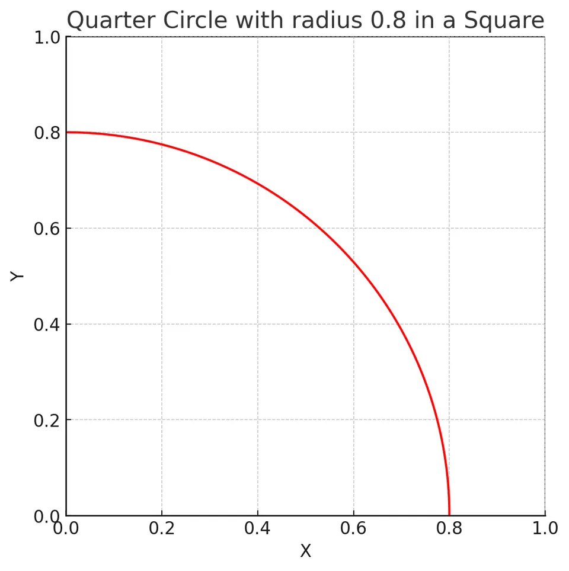

Geometric probability is a fascinating branch of probability theory where outcomes are associated with geometric figures and their measures—such as lengths, areas, and volumes—rather than discrete numerical outcomes. It often deals with continuous random variables and employs integral calculus to calculate probabilities.
In geometric probability, the probability of an event is typically determined by the ratio of the measure (length, area, volume) of the favorable outcomes to the measure of the entire sample space. This approach is particularly useful when dealing with problems involving random points in geometric figures.
Calculate the probability that a randomly chosen point inside a unit square is at a distance less than $r$ units from a specific corner (the origin).
Setup:

| Term | Description |
|---|---|
| Sample Space ($S$) | All points $(X, Y)$ such that $0 \leq X \leq 1$ and $0 \leq Y \leq 1$. |
| Event ($E$) | All points $(X, Y)$ such that $D = \sqrt{X^2 + Y^2} < r$. |
Since the points are uniformly distributed over the square, the probability density function (PDF) of $(X, Y)$ is constant over $S$:
$$f_{X,Y}(x, y) = \begin{cases} 1, & \text{if } (x, y) \in S, \\ 0, & \text{otherwise}. \end{cases}$$
The probability $P(D < r)$ is the ratio of the area of the region where $D < r$ (denoted as $A_E$) to the area of the square $A_S$:
$$P(D < r) = \frac{A_E}{A_S}.$$
Since $A_S = 1$ (unit square), $P(D < r) = A_E$.
The calculation of $A_E$ depends on the value of $r$:
| Case | Range |
|---|---|
| Case 1 | $0 \leq r \leq 1$ |
| Case 2 | $1 < r \leq \sqrt{2}$ |
| Case 3 | $r > \sqrt{2}$ |
In this range, the quarter circle of radius $r$ lies entirely within the square.
The area of a quarter circle of radius $r$ is:
$$A_E = \frac{\pi r^2}{4}.$$
$$P(D < r) = A_E = \frac{\pi r^2}{4}.$$
Example: For $r = 0.8$,
$$P(D < 0.8) = \frac{\pi (0.8)^2}{4} = \frac{\pi \times 0.64}{4} = 0.16\pi \approx 0.5027.$$
In this range, the quarter circle extends beyond the square, and we need to calculate the portion of the circle that lies within the square.
The overlapping area is the quarter circle minus the segments that lie outside the square (shaded regions beyond $x = 1$ and $y = 1$).
I. Compute the area of the quarter circle:
$$A_{\text{quarter}} = \frac{\pi r^2}{4}.$$
II. Compute the area outside the square but inside the quarter circle:
Due to symmetry, calculate the area in one of the regions (e.g., where $x > 1$) and double it.
$$A_{\text{outside}} = 2 \int_{x=1}^{r} \sqrt{r^2 - x^2} \, dx.$$
III. Compute the integral:
Perform a substitution $x = r \sin \theta$:
The integral becomes:
$$\begin{aligned} A_{\text{outside}} &= 2 \int_{\theta_1}^{\frac{\pi}{2}} \sqrt{r^2 - r^2 \sin^2 \theta} \cdot r \cos \theta \, d\theta \\ &= 2 r^2 \int_{\theta_1}^{\frac{\pi}{2}} \cos^2 \theta \, d\theta \\ &= 2 r^2 \left[ \frac{\theta}{2} + \frac{\sin 2\theta}{4} \right]_{\theta_1}^{\frac{\pi}{2}} \\ &= 2 r^2 \left( \frac{\pi}{4} - \frac{\theta_1}{2} - \frac{\sin 2\theta_1}{4} \right). \end{aligned}$$
IV. Compute $A_E$:
$$\begin{aligned} A_E &= A_{\text{quarter}} - A_{\text{outside}} \\ &= \frac{\pi r^2}{4} - 2 r^2 \left( \frac{\pi}{4} - \frac{\theta_1}{2} - \frac{\sin 2\theta_1}{4} \right) \\ &= \frac{\pi r^2}{4} - r^2 \left( \frac{\pi}{2} - \theta_1 - \frac{\sin 2\theta_1}{2} \right) \\ &= r^2 \left( \theta_1 + \frac{\sin 2\theta_1}{2} - \frac{\pi}{4} \right). \end{aligned}$$
V. Simplify using trigonometric identities:
$$ \theta_1 = \arcsin \left( \frac{1}{r} \right) $$
$$ \sin 2\theta_1 = 2 \sin \theta_1 \cos \theta_1 = 2 \cdot \frac{1}{r} \cdot \sqrt{1 - \left( \frac{1}{r} \right)^2} = \frac{2 \sqrt{r^2 - 1}}{r^2} $$
VI. Final Expression for $A_E$:
$$A_E = r^2 \left( \arcsin \left( \frac{1}{r} \right) + \frac{\sqrt{r^2 - 1}}{r^2} - \frac{\pi}{4} \right).$$
$$P(D < r) = A_E = r^2 \left( \arcsin \left( \frac{1}{r} \right) + \frac{\sqrt{r^2 - 1}}{r^2} - \frac{\pi}{4} \right).$$
Example: For $r = 1.2$,
I. Compute $\arcsin \left( \frac{1}{1.2} \right)$:
$$\arcsin \left( \frac{1}{1.2} \right) \approx \arcsin(0.8333) \approx 0.9865.$$
II. Compute $\sqrt{(1.2)^2 - 1}$:
$$\sqrt{1.44 - 1} = \sqrt{0.44} \approx 0.6633.$$
III. Compute $A_E$:
$$\begin{aligned} A_E &\approx (1.2)^2 \left( 0.9865 + \frac{0.6633}{(1.2)^2} - \frac{\pi}{4} \right) \\ &= 1.44 \left( 0.9865 + \frac{0.6633}{1.44} - 0.7854 \right) \\ &= 1.44 \left( 0.9865 + 0.4607 - 0.7854 \right) \\ &= 1.44 \times 0.6618 \approx 0.9521. \end{aligned}$$
So, $P(D < 1.2) \approx 95.21\%$.
For $r \geq \sqrt{2}$, the entire square lies within the circle of radius $r$ centered at the origin. Thus, every point in the square satisfies $D < r$.
$$P(D < r) = 1.$$
Calculate the probability that a randomly drawn chord in a circle is longer than the radius of the circle.
Setup:
The problem is known as Bertrand's Paradox, which arises because the probability depends on how "at random" is defined when selecting chords in a circle. There are multiple methods to select a chord at random:
| Method | Description |
|---|---|
| Random Endpoints Method | Choose two random points on the circumference and draw the chord between them. |
| Random Radial Point Method | Fix one endpoint and select the chord's direction uniformly at random. |
| Random Midpoint Method | Choose a random point inside the circle as the midpoint of the chord. |
Each method yields a different probability. We'll use the Random Midpoint Method for this example, which provides a well-defined and uniform probability distribution over all possible chords.
| Term | Description |
|---|---|
| Sample Space ($S$) | All points $(X, Y)$ inside the circle $x^2 + y^2 \leq R^2$, representing possible midpoints of chords. |
| Event ($E$) | All midpoints $(X, Y)$ such that the corresponding chord has length $L > R$. |
A chord's length $L$ is related to its distance $d$ from the center of the circle:
$$L = 2 \sqrt{R^2 - d^2}.$$
For the chord to have $L > R$:
$$2 \sqrt{R^2 - d^2} > R \implies \sqrt{R^2 - d^2} > \frac{R}{2} \implies R^2 - d^2 > \left( \frac{R}{2} \right)^2 \implies d^2 < \left( \frac{R\sqrt{3}}{2} \right)^2.$$
Thus, the event $E$ corresponds to all midpoints within a circle of radius $\frac{R}{2}$.
I. Area of the Inner Circle ($A_E$):
$$A_E = \pi \left( \frac{R\sqrt{3}}{2} \right)^2 = \pi \left( \frac{R^2 \times 3}{4} \right) = \frac{3\pi R^2}{4}.$$
II. Area of the Entire Circle ($A_S$):
$$A_S = \pi R^2.$$
III. Probability:
$$P(L > R) = \frac{A_E}{A_S} = \frac{\frac{3\pi R^2}{4}}{\pi R^2} = \frac{3}{4}.$$
Therefore, the probability that a randomly drawn chord (using the Random Midpoint Method) is longer than the radius of the circle is $\frac{3}{4}$ or 75%.
Calculate the probability that the sum of two independent random numbers $X$ and $Y$, each uniformly distributed between 0 and 1, is less than 1.
Setup:
Since $X$ and $Y$ are independent and uniformly distributed, their joint PDF is:
$$f_{X,Y}(x, y) = \begin{cases} 1, & \text{if } 0 \leq x \leq 1, \, 0 \leq y \leq 1, \\ 0, & \text{otherwise}. \end{cases}$$
| Term | Description |
|---|---|
| Sample Space ($S$) | The unit square in the $xy$-plane where $0 \leq x \leq 1$ and $0 \leq y \leq 1$. |
| Event ($E$) | The set of points where $x + y < 1$. |
The probability $P(X + Y < 1)$ is the area under the joint PDF over the region $E$:
$$P(X + Y < 1) = \iint_E f_{X,Y}(x, y) \, dx \, dy = \iint_E 1 \, dx \, dy = \text{Area of } E.$$
The region $E$ is a right triangle within the unit square bounded by $x = 0$, $y = 0$, and $x + y = 1$.
I. Set Up the Integral:
$$P(X + Y < 1) = \int_{x=0}^{1} \int_{y=0}^{1 - x} dy \, dx.$$
II. Evaluate the Inner Integral:
$$\int_{y=0}^{1 - x} dy = (1 - x) - 0 = 1 - x.$$
III. Evaluate the Outer Integral:
$$P(X + Y < 1) = \int_{x=0}^{1} (1 - x) \, dx.$$
IV. Compute the Integral:
$$P(X + Y < 1) = \int_{x=0}^{1} (1 - x)dx$$
$$= \left[ x - \frac{x^2}{2} \right]_{0}^{1} $$
$$= \left( 1 - \frac{1}{2} \right) - \left( 0 - 0 \right) = \frac{1}{2} $$
Therefore, the probability that the sum of two independent uniform random variables on [0, 1] is less than 1 is $\frac{1}{2}$ or 50%.